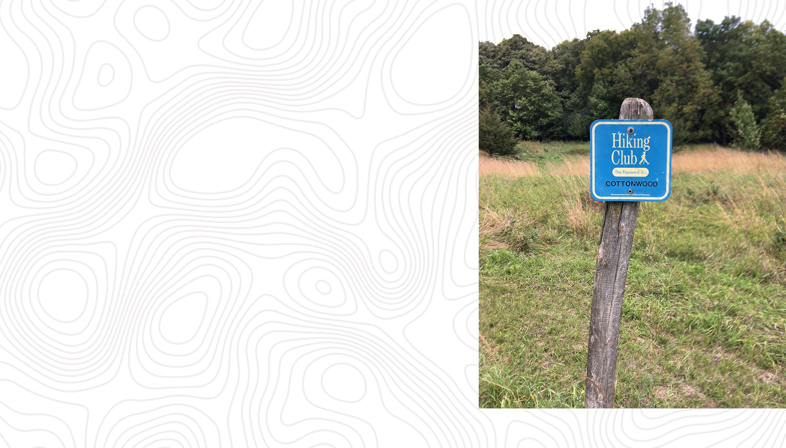
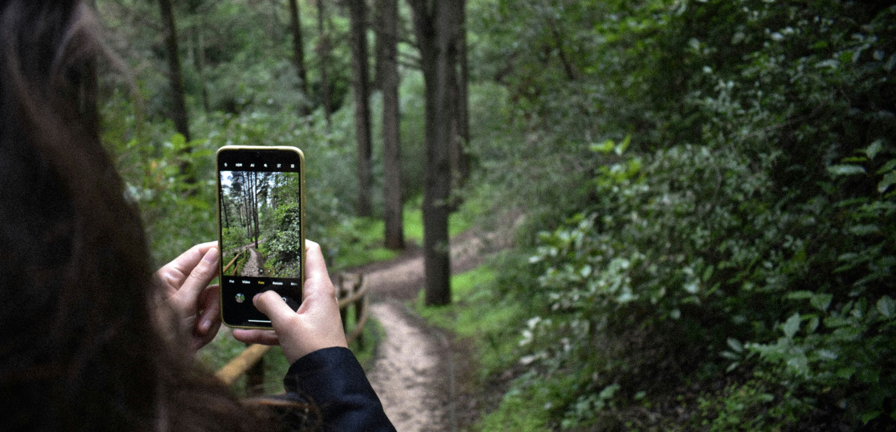
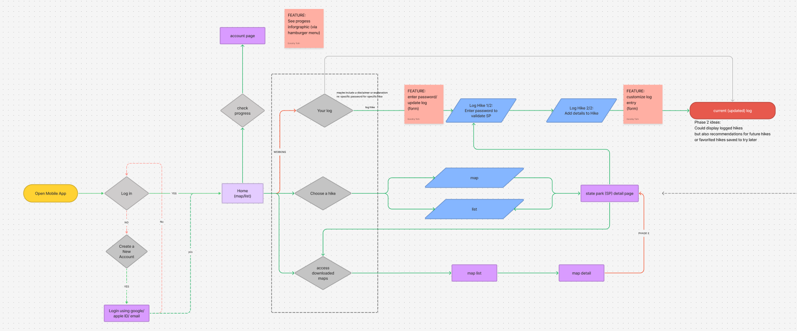
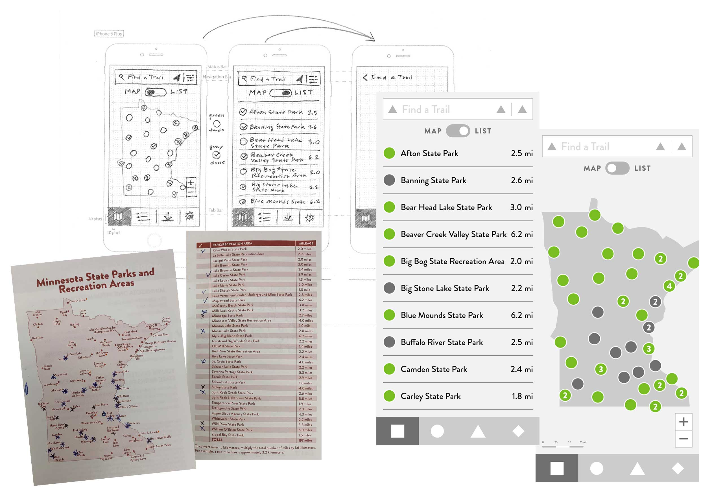
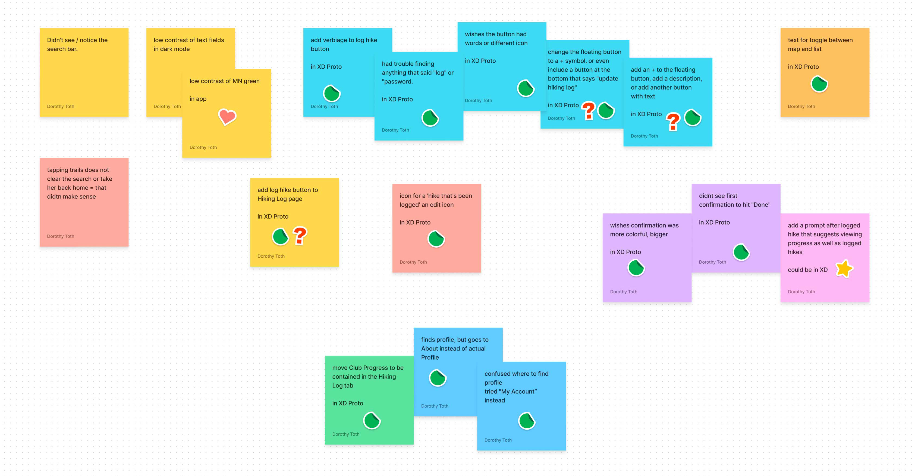
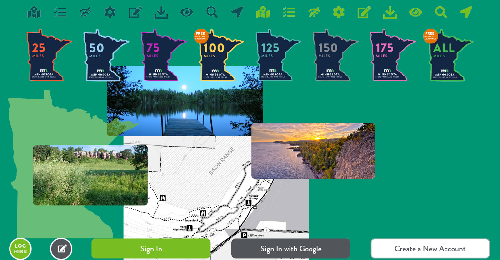
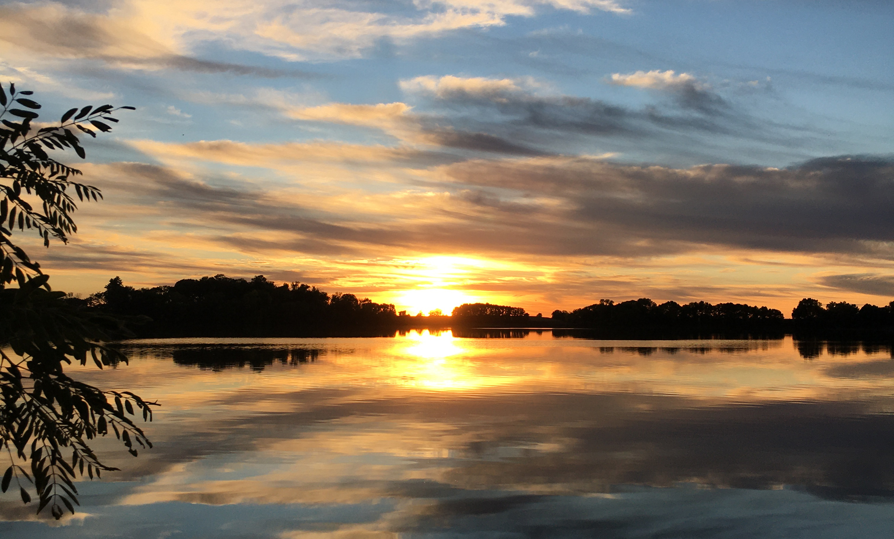

Members of the MN Hiking Club are currently logging their hikes manually in a paper booklet. Because they are conducting their own trail research and searching for hike inspiration on multiple platforms, they lack a streamlined recording and planning process.
We believe that a Hiking Club app would offer an accessible, real-time, and motivating way for Hiking Club members to record and revisit their Minnesota State Park hikes, as well as redeem rewards for earning Hiking Club trail mileage.
Membership in this club offers anyone incentive to hike all of Minnesota’s 70+ state parks. Here’s how it works:
Earn rewards! Present your log at any state park office to get patches and free nights of camping.

When we approached our stakeholder, we presented our lofty goal: replace the traditional paper booklet with a mobile-friendly solution for easier hike recording. As we discussed the concept further, we all felt the app would also help spread awareness of state parks and encourage people to get outdoors and move.
With our stakeholder excited about the idea, we conducted surveys and interviews with active individuals and members of the Hiking Club. Among these individuals, we found high smartphone usage with everyone.
Our data supported developing a mobile app to meet the need for convenient hike recording.

We sifted through tons of great interview feedback and lots of great feature suggestions. Overlapping ideas included:
We chose features that were most important to users, helped organize our app navigation, and motivated hikers to keep hiking.
Storyboarding and user iterations allowed us to see how to best lay out our navigation, park pages, features, and what could be slated for future phases. The app began to take shape with wireframes and mimicked the booklet in many ways.


During this step, we asked multiple users to complete three main tasks with our mid-fidelity prototype:
Testing revealed a handful of items we were able to quickly clarify:

As we applied branding from the MN Department of Natural Resources, the Hiking Club app came to life. Brand colors, fonts, and assets added depth and cohesion to the user interface, and updates from testing helped refine the overall experience.

Our app offers effortless recording of completed hikes, up-to-date progress towards hiking all Minnesota state parks, online information about state parks, uploading photos, and more.
We believe this app would help countless Hiking Club members and outdoor enthusiasts alike find information on state parks, encourage them to visit, and keep hiking the trails.
There is no end in sight for what this app could offer. Some of our favorite ideas are:
Copyright Pending
When I think about the core purpose of the MN Hiking Club, and think about bringing this concept to an app environment, I can’t imagine a better way to present this club to future generations of outdoor lovers. This was one of my favorite projects to work on ever, and as I close out hiking all of Minnesota state parks with my family over 10 seasons, I have more passion than ever to stay connected to this idea. Maybe someday it will become a reality. Maybe someday I will complete this club again – this time with this app at my fingetips.
